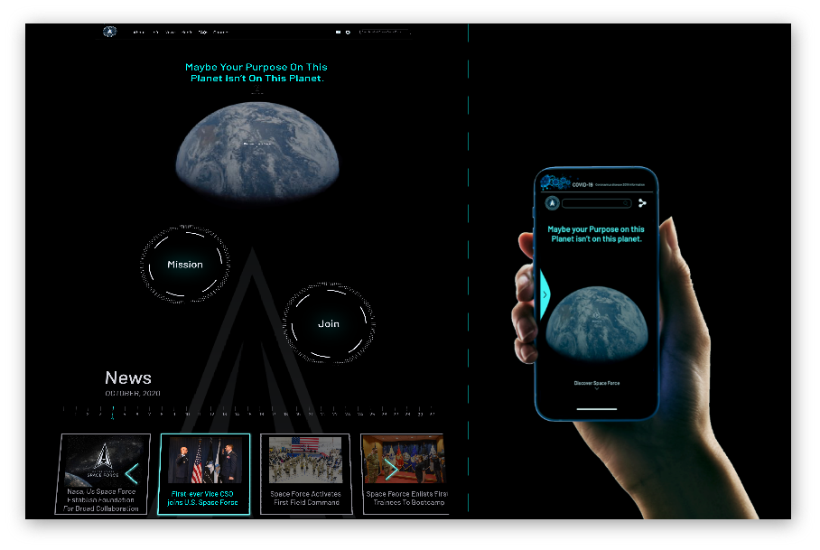

Us Space Force Website Redesign
MY ROLE: UX/UI Designer
PROJECT NAME: Us Space Force Website Redesign
DESCRIPTION: I worked, to analyze existing website, conducted
users testing and card sorting. Redesigned site
map. Based on research. Created style guide and
delivered 5RWD hi-fidelity pages.
TOOLS:

Fravel-Traveling App for Bikers
MY ROLE: UX/UI Designer
PROJECT NAME: Fravel-Traveling App for Bikers
DESCRIPTION: Conducted user interviews and surveys,
based on research analysis created, affinity diagram, empathy map, user
persona and storyboard, brainstormed ideas and prioritized on matrix, created
user flow and lo-fi wireframes, tested with users and iterated based on feedback. Delivered hi-fidelity gps application with integrated weather.
TOOLS:

Ngo Website Redesign
MY ROLE: UX/UI Designer
PROJECT NAME: Redesign of a "Pianos For Peace" Website
DESCRIPTION:conducted users testing, analyzed main flows of
the website. Discussed redesign project with the CEO of an organization. Delivered RWD of a complete donation flow of the website.
TOOLS: